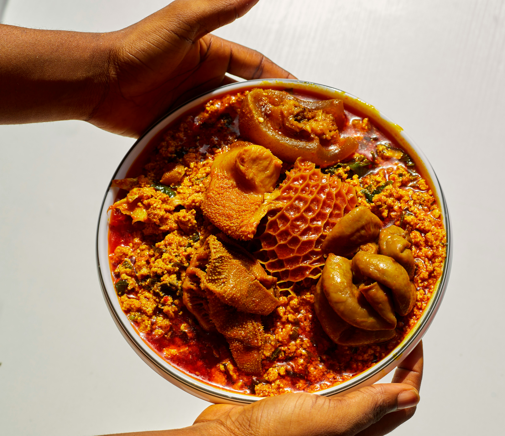

ACCUEIL, AMOUR et RESPECT :c'est ce que nous vous offrons à travers
nos plats traditionnels africains.
Nos plats traditionnels
SAKA SAKA ET LE FOUFOU : 2000 FCFA
Le saka-saka (aussi appelé pondu) est un plat traditionnel d'Afrique centrale emblématique de la République du Congo.
Il est principalement composé de feuilles de manioc pilées ou broyées, cuites longuement dans de l'huile de palme et
agrémentées d'une garniture riche et savoureuse
TRIPE SAUTEE : 1500 FCFA

La tripe sautée est un plat composé principalement d'estomacs de ruminants (bœuf ou mouton)
coupés en morceaux, sautés à la poêle et généreusement épicés.
RIZ POISSON : 2500 FCFA
Le plat de riz au poisson, souvent connu sous le nom de Thiéboudiène (plat national du Sénégal) ou "riz au gras", est composé de quatre éléments principaux mijotés dans une base aromatique et tomatée.
Notre histoire
NELLY AFRICA est un restaurant africain, né de la passion pour la cuisine africaine et le désir
de partager des moments de joie et de convivialité entre familles, amis ,connaissaceset pourquoi pas visiteurs!!.